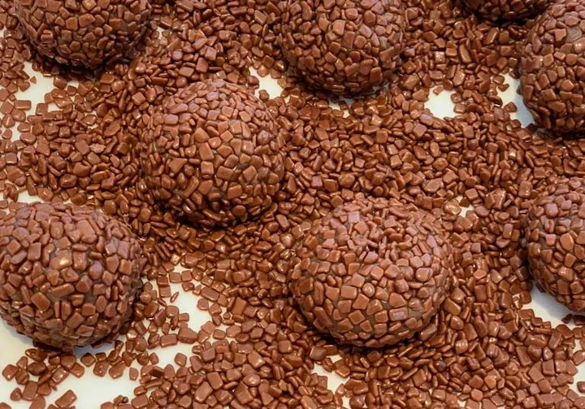

Ingredientes
- 1 lata de leite condensado
- 2 colheres de sopa de chocolate em pó
- 1 colher de sopa de manteiga
- Granulado para decoração
Modo de preparo
1. Misture o leite condensado, o chocolate em pó e a manteiga em uma panela.
2. Leve ao fogo baixo, mexendo sempre, até que a mistura desgrude do fundo da panela.
3. Deixe esfriar e, com as mãos untadas, modele bolinhas.
4. Passe as bolinhas no granulado e coloque em forminhas.